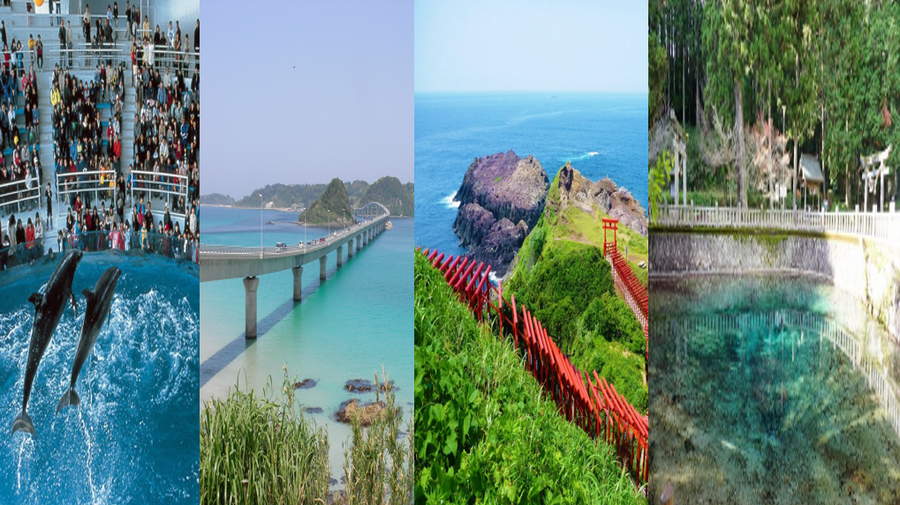

日帰りツアー①

ツアーの説明
このページでは、日帰りで「しものせき水族館」「角島」「元乃隅稲成神社」「別府弁天池」を巡るツアーを紹介いたします。
＜観光地の位置＞
|
＜公共交通機関を利用して行く方法＞ JR新下関駅～JR下関駅 ↓ バス しものせき水族館 ↓ バス JR下関駅～JR特牛駅 ↓ バス 角島 ↓ バス JR特牛駅～JR長門古市駅 ↓ タクシー 元乃隅稲成神社 ↓ タクシー JR長門古市駅～JR長門市駅～JR美祢駅 ↓ バス 別府弁天池 ↓ バス JR美祢駅～JR厚狭駅～帰路 |
＜自家用車を利用して行く方法＞ 中国自動車道下関ICまたは関門トンネル ↓ 県道57号線～国道9号線 しものせき水族館 ↓ 国道9号線～国道191号線～県道275号線～県道276号線 角島 ↓ 県道276号線～県道275号線～国道191号線～県道66号線 元乃隅稲成神社 ↓ 県道66号線～国道191号線～国道316号線～県道31号線 別府弁天池 ↓ 県道31号線～国道191号線～ 帰路 |